Timers configuration model
Model used to configure up to 3 channels CH1, CH2 and CH3 of STM32F4 timers TIM1, TIM2, TIM3, TIM4, TIM5 and TIM8.
Contents
- S-Function
- Timer mode : Output_PWM
- Timer mode : Input_Capture
- Parameters
- Timer
- Timer counter clock (Hz)
- Counter mode
- Timer mode
- Signal output frequency for channels CH1, CH2 and CH3 is an input port
- Signal output frequency (Hz)
- Continuous conversion mode
- Channel input settings
- Enable Channel
- Channel Type
- Input capture polarity
- Input capture prescaler
- Input capture filter
- Input capture interrupt
- Channel output settings
- Enable Channel
- Channel Type
- Enable interrupt
- Duty cycle is an input port
- Output duty cycle (%)
- Output polarity
- Output complement state
- Output complement polarity
- Output state during idle
- Output complement state during idle
- Examples
- Example1: With Output Compare interrupt generation
- Example1: No interrupt generation
S-Function
Nb Input: 0 to 4
- F out : Set signal output frequency
- duty CH1 : Duty cycle percentage value for CH1. Timer mode parameter is output_PWM
- duty CH2 : Duty cycle percentage value for CH2. Timer mode parameter is output_PWM
- duty CH3 : Duty cycle percentage value for CH3. Timer mode parameter is output_PWM
Nb Output: 0 to 3 Timer mode parameter is Input_Capture
- CH1 : Computed frequency value of channel 1.
- CH2 : Computed frequency value of channel 2.
- CH3 : Computed frequency value of channel 3.

Timer mode : Output_PWM
Timer output signal frequency and channel duty cycle percentage value are input parameters.

Timer mode : Input_Capture
Output CHx computed frequencies.

Parameters
Set global parameters for the timer and parameters for chanels 1-3.
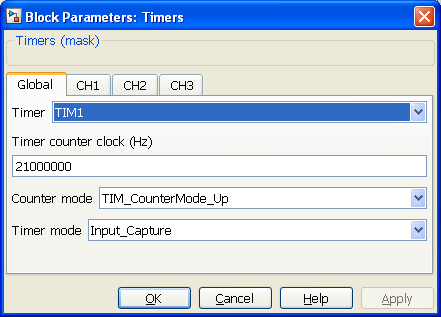
Timer
Timer selection. Can be timer 1-5,8 (1 to 5 or 8)

Timer counter clock (Hz)
Frequency value of the timer. Configure timer tick base to compute input or output channel signal.
Must be higher than signal frequency
Counter mode
Counter mode used to generate output signals.


The Output compare interrupt flag is set when: the counter counts down (Center aligned 1), the counter counts up (Center aligned 2) the counter counts up and down (Center aligned 3). Interrupt is generated when CHx "Enable interrupt" parameter is selected.
Timer mode
Configure timer to generate output signal or compute input signal frequency.

- Input Capture : Channels' signal is an input

- Output PWM : Channels' signal is an output

Signal output frequency for channels CH1, CH2 and CH3 is an input port
Output channel frequency value comes from an input port. Timer mode is Output PWM.
Signal output frequency (Hz)
This parameter gives output channel frequency value or initial value if it comes from an input port. Timer mode is Output PWM.
Continuous conversion mode
Specifies whether the conversion is performed in continuous mode. Conversion is performed in single mode when it is not selected.
Channel input settings
Select the external trigger edge.
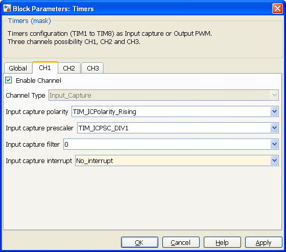
Enable Channel
Input channel parameters are available.
Channel Type
Read only parameter that reminds type of channel used. (Input/Output)
Input capture polarity
Front use to compute signal frequency. (duty cycle not implemented)

Input capture prescaler
Set the number of polarity event before signal is taken into account.
Example: Rising polarity and prescaler Div2. Signal event is taken into account every 2 rising edge. Usefull for very high frequency signal.

Input capture filter
Set the number of timer counter ticks signal must be at same level to be taken into account.
Example: Rising polarity and Timer counter clock is 21000000Hz. If input filter is 3. Rising edge is taken into account after 3/21E6 = 0.15µs Usefull to filter rebonds.

Input capture interrupt
Signal information to compute.
- No interrupt : Input is not used.
- Compute frequency : CH1 output is the signal frequency value (Hz).
- Compute duty cycle : Not implemented

Channel output settings
Select the external trigger edge.
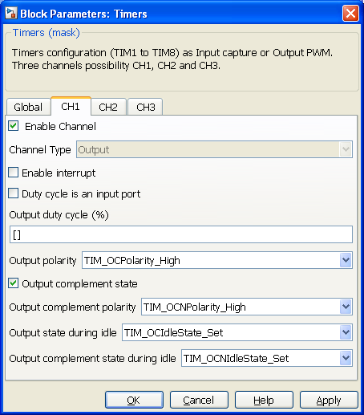
Enable Channel
Output channel parameters are available.
Channel Type
Enable channel output compare interrupt. Interrupt is generated depending on "Counter mode" parameter configuration.
Enable interrupt
Read only parameter that reminds type of channel used. (Input/Output)
Duty cycle is an input port
Output signal PWM duty cycle percentage value comes from input port.
Output duty cycle (%)
Output signal PWM duty cycle percentage value or initial value when it comes from input port.
Output polarity
High or Low rest level.

Output complement state
Output complement state validation. Output complement state signal is available from corresponding port-pin.
Output complement polarity
High or Low rest complement signal level if output complement state is selected.

Output state during idle
Output level during idle.

Output complement state during idle
Output complement level during idel if output complement state is selected.

Examples
PWM output/input example.
Examples based on STM3240G-EVAL board.
PWM output signal (50% fix duty cycle) is generated on TIM8 CH1 (PortC-Pin6). PWM output signal frequency is from 100KHz to 200KHz depending on potentiometer value read from ADC3 PortF-Pin9.
TIM1 CH1 is in input capture configuration mode. It compute input (PortE-Pin9) signal frequency value that is sent to HyperTerminal through USART3.
PortC-Pin6 must be physically connected to PortE-Pin9.
Example1: With Output Compare interrupt generation
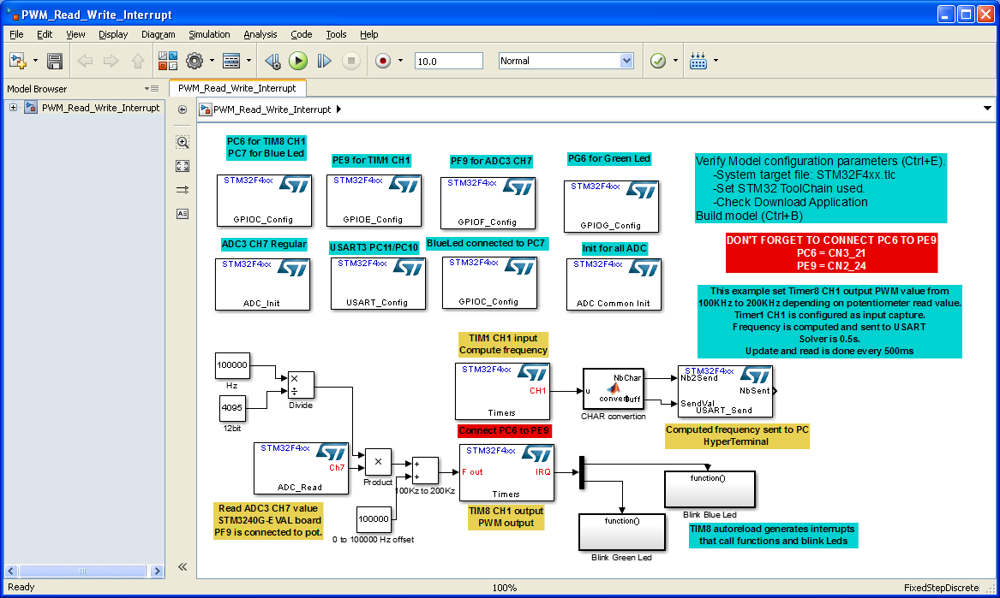
Timer 8 mode is output PWM.
Initial frequency value is set to 100KHz and Output signal frequency value is a block parameter.
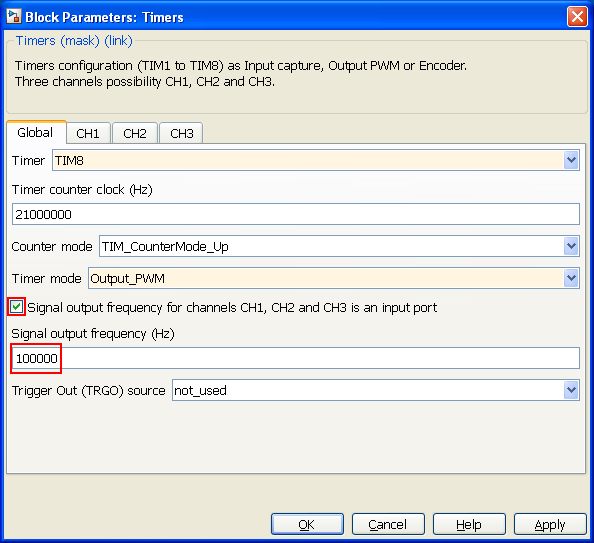
Timer 8, Channel 1 used. Enable interrupt, duty cycle value is fixed to 50% and complement signal not used
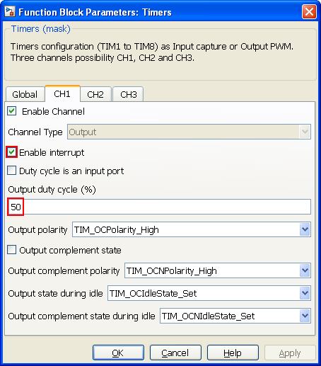
Timer 8, Channel 2 used. Enable interrupt, duty cycle value is fixed to 50% and complement signal not used
Function called for every channel interrupt depending on Counter mode parameter setting
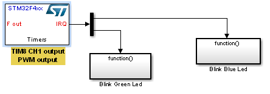
Example of function called : Blink green led
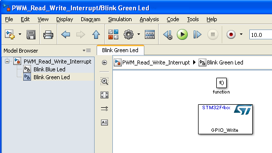
Timer 1 mode is input capture
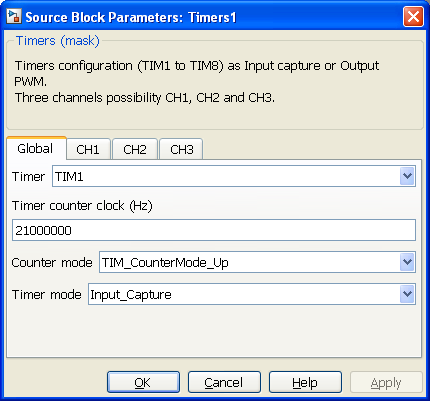
Channel 1 used to compute signal frequency value.
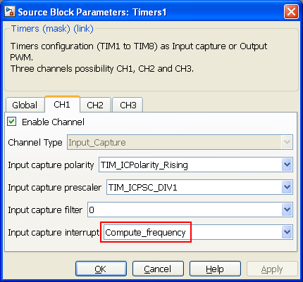
Example1: No interrupt generation
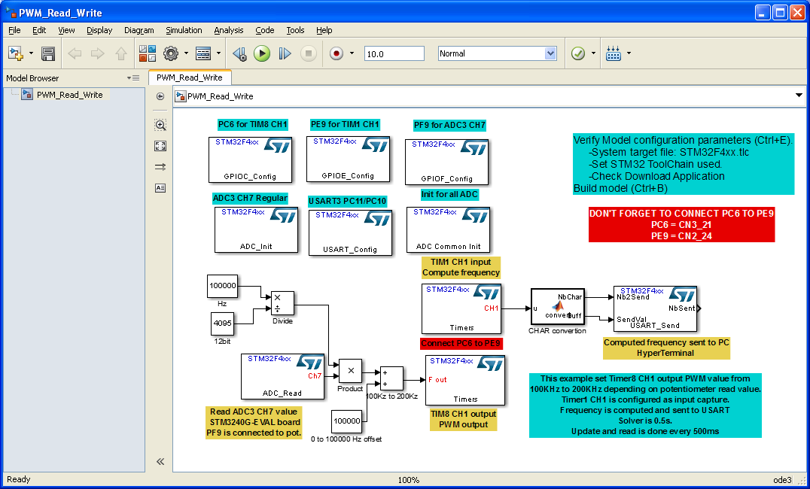
Timer 8 mode is output PWM.
Initial frequency value is set to 100KHz and Output signal frequency value is a block parameter.
Timer 8, Channel 1 used. No interrupt, duty cycle value is fixed to 50% and complement signal not used
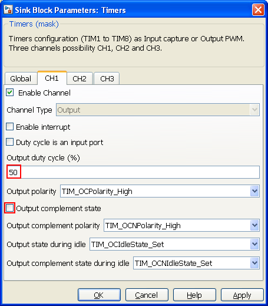
Timer 1 mode is input capture
Channel 1 used to compute signal frequency value.